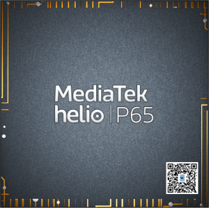

MediaTek Helio P65 (MT6768)
Jump to navigation
Jump to search
|  | |
| Manufacturer | MediaTek |
|---|---|
| Name | Helio P65/G70/80/85/88 |
| Codenames | mt6768/mt6769v/cb/t/z/h |
| Architecture | aarch64 |
| CPU | 2x 2.0 GHz Cortex-A75, 6x 1.8 GHz Cortex-A55 |
| GPU | ARM Mali-G52 MC2 (Bifrost) @ 1000 MHz |
| Year | 2020 |
| Process | 12nm |
| Mainline | no |
| Community Page | https://gitlab.com/mtk-mainline/mt6768/linux |
| Components | |
| CPU |
Partial
|
| UART |
Works
|
| Storage |
Broken
|
| USB |
Partial
|
| Display |
Partial
|
| GPU |
Broken
|
| Pinctrl |
Works
|
| I²C |
Partial
|
| SPI | |
| Audio |
Broken
|
| Video |
Broken
|
| Thermal |
Broken
|
| WiFi |
Broken
|
| Bluetooth |
Broken
|
| Modem |
Broken
|
| GPS |
Broken
|
| Camera |
Broken
|
| Suspend |
Broken
|
{kind=link}
MT6769Z (or Helio G85) is a mid-range ARMv8.2-A (64-bit) MediaTek SoC released in 2020. It is based on based on MT6768 (or Helio P65) platform similarly to how SDM636 is a part of the Qualcomm SDM660 family. This SoC family is also rather closely related to MediaTek MT8183 which is mainlined and used by various Chromebooks.
Devices
Helio G85 (MT6769Z)
| Device | Codename | Mainline |
|---|---|---|
| Volla Phone 22 | volla-mimameid | Y |
Helio G80 (MT6769T)
| Device | Codename | Mainline |
|---|---|---|
| Xiaomi Redmi 9 | xiaomi-lancelot |
USB
TODO: Look into what's needed for host mode; is switching the dr_mode enough (with a powered hub)? how will power delivery from the port work? can we make it dual role already? |
Display
TODO: Figure out what's required to draw images on virtual terminal (with simplefb; X.org already seems to render an Xfce4 desktop just fine, does Wayland work? |
I2C
| TODO: Check out NFC in userspace with neard, rfkill node in sysfs at least is registered already :) |
SPI
TODO: Test with linux-tools-spi on Volla Phone 22 (volla-mimameid) after adding nodes for fingerprint sensor under spi2! |
Mainline fork
There is a mainline kernel fork on GitLab @ mtk-mainline/mt6768/linux where development is currently (2022-11-03 / v6.1-rc3) active.
Most information for MediaTek Helio P23 (MT6763) is also applicable here, most of that should be consolidated to a generic MediaTek mainlining page...